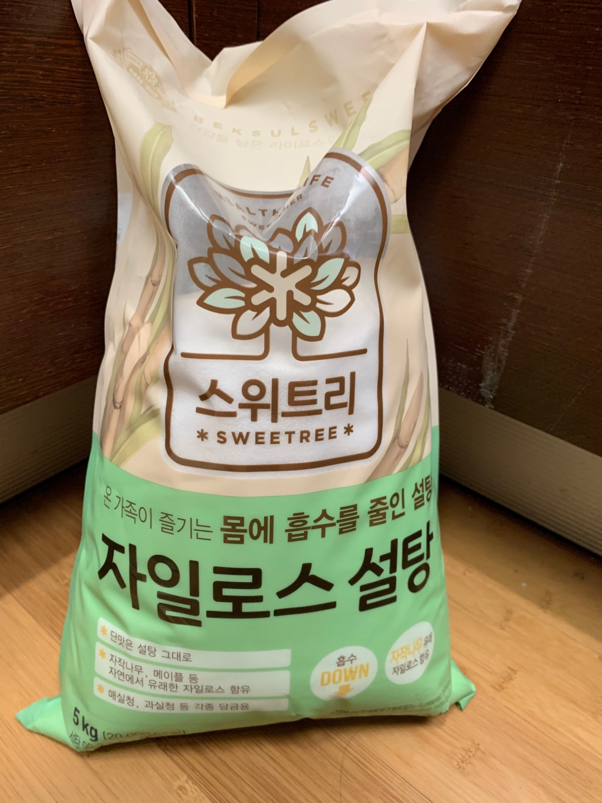

시장에서 싱싱한 딸기를 구입했어요!왜 딸기 처음에 샀을때는 사진을 안찍었을까요...ㅎ후회중...
그리고 여러분들은 소중하니까 당의 흡수를 줄인 자일로스 설탕을 샀어요!

굉장히 크죠?
그리고 딸기청을 보관할 용기도 샀답니다!용기를 살 용기가 필요해!
딸기를 구입했으니 이제 깨끗하게 씻어야겠죠?
식초물을 이용하여 더 깨끗하게 세척하였답니다!
이때 딸기 씻기의 골든 타임인 30초를 꼭 지켜줘야해요!안지켜주면 비타민, 당분이 많이 빠져나간다는 얘기가...
딸기가 마르지 않은 채로 청을 담으면 후에 곰팡이가 생길 수 있데요!
그래서 딸기 세척후 꼭 말려주어야 합니다!